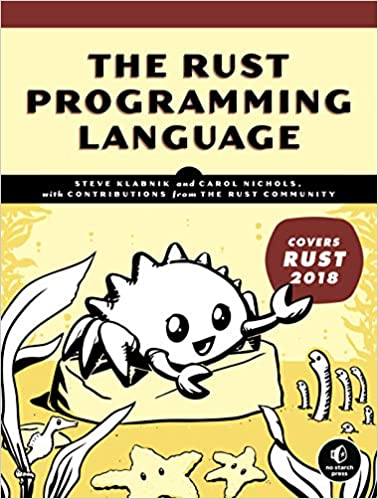

class: center, middle  # Rust : un bref aperçu Avril/Octobre 2021 (Ludorg) --- class: left # Rust : un bref aperçu ## Plan - Introduction - Historique de Rust - Apports et bénéfices du langage - Outils et installation - Concepts de base - Notions avancées (non présentées) ## Annexes - Liens pour aller plus loin - Utilisation et configuration des outils.red[*] pour Rust sur un PC "corporate" .footnote[.red[*] dont [Visual Studio Code](https://code.visualstudio.com/)] --- # Introduction ## Pourquoi cette présentation ? Rust est un langage dont on entend beaucoup parler. En 2020, il occupait d'ailleurs la première place du classement Stack Overflow dans la catégorie [_Most Loved, Dreaded, and Wanted Languages_](https://insights.stackoverflow.com/survey/2020#technology-most-loved-dreaded-and-wanted-languages-loved). Quelques sujets récents qui pourraient/devraient nous concerner : - Node.js a été réécrit en Rust : [_Deno, A secure runtime for JavaScript and TypeScript_](https://deno.land/). - Rust pourrait bientôt devenir le second language (après le C) pour le développement du kernel Linux.red[*]. - Android Open Source Project intègre depuis très récemment (avril 2021) le support de Rust pour le développement de l'OS.red[*]. - Guide ANSSI pour le développement d'applications sécurisées en Rust.red[*] .footnote[.red[*]Voir les liens en fin de présentation.] --- ## Rust c'est quoi ? Introduction tirée de _Rust by Example_ (fourni avec la documentation Rust) : __Rust is a modern systems programming language focusing on safety, speed, and concurrency. It accomplishes these goals by being memory safe without using garbage collection.__ C'est un langage qui se veut __fiable, concurrent et rapide__. Ces vérifications de fiabilité (gestion mémoire et concurrence) sont faites dès la compilation. -- _Programmers who are already working with low-level code can use Rust. Rust isn't limited to low-level systems programming. It's expressive and ergonomic enough to make CLI apps, web servers, and many other kinds of code quite pleasant to write..._ -- Site web : [https://www.rust-lang.org/](https://www.rust-lang.org/) (à ne pas confondre avec le jeu vidéo éponyme...) -- <img src="Rustacean-orig-noshadow.svg" width="15%" style="float: left; margin: 0px 15px 15px 0px;"> Ferris le crabe est la mascotte non officielle de la communauté Rust. Un certain nombre de développeurs Rust se nomment eux-mêmes __Rustaceans__, un jeu de mots avec _crustacean_. Pour le nom du crabe, c'est un jeu de mots avec _ferrous_ (ferreux) qui provient de l'idée que le fer rouille (_rust_ en anglais)... <br style="clear:both" /> --- # Historique de Rust Rust n'était au démarrage (2006) que le _side project_ d'un développeur de Mozilla (Graydon Hoare). A partir de 2010, Rust a été intégré dans les projets de la fondation Mozilla et le développement de [Servo](https://github.com/servo/servo), le moteur de rendu de Firefox a été un des premiers développements en Rust. Cinq ans après, en mai 2015, sortie de la première version stable de Rust, la 1.0. La dernière release (25 mars 2021) est la 1.51. -- Rust n'est plus seulement le nouveau langage de Mozilla avec lequel Servo est développé. Rust est désormais bien répandu et peut-être utilisé dans la programmation système. On peut aussi faire du front web en Rust avec [WebAssembly](https://rustwasm.github.io/docs/book/), on développe de l'embarqué en Rust ou du [jeu vidéo](https://arewegameyet.rs/). -- Il existe une multitude de bibliothèques (_crates_.red[*]) pour diverses applications. Près de 60.000 _crates_ en stock sur https://crates.io/ fin avril 2021. .footnote[.red[*] caisses en anglais. Les _crates_ et les dépendances sont gérées avec l'outil .remark-inline-code[cargo].] -- En août 2020, restructuration de Mozilla et licenciement de quasiment toutes les personnes travaillant sur Servo et Rust. Mais, en février 2021, lancement de la [Rust Foundation](https://foundation.rust-lang.org/) (_a new independent non-profit organization to steward the Rust programming language and ecosystem_), soutenue par AWS, Huawei, Google, Microsoft and Mozilla. --- # Apports et bénéfices du langage Reprenons l'introduction de _Rust by Example_ : _Rust is a modern systems programming language focusing on safety, speed, and concurrency. It accomplishes these goals by being memory safe without using garbage collection._ Le trio des concepts à retenir est __safety, speed, and concurrency__. -- Rust est construit pour : - être fiable pour tout ce qui concerne la gestion de la mémoire, - garantir une absence d'erreurs de concurrence, - rester pratique tout en étant aussi rapide que le C. -- Le langage Rust garantit l'absence d'erreurs de gestion mémoire ou de concurrence dès la compilation. La rapidité d'exécution est très proche de celle du C ou du C++, sans avoir besoin de mettre en place de garbage collector. Rust propose aussi des abstractions de haut niveau. -- Rust certifie que si un programme compile, alors il n'y aura pas de segmentation fault, de fuite mémoire ou de problème de concurrence. Le plus long quand on écrit un programme Rust, ce n'est pas de l'écrire, c'est d'arriver à ce qu'il compile... --- ## Exemple d'erreurs détectées Les messages d'erreur du compilateur .remark-inline-code[rustc] sont très détaillés. Ils expliquent le pourquoi de l'erreur, proposent parfois des solutions ou donnent des pistes vers de la documentation pour comprendre et trouver une correction. ```terminal $ rustc src/main.rs <span style="font-weight:bold;"></span><span style="font-weight:bold;color:lime;"> Compiling</span> variables v2.3.4 (K:\17_rust\ultimate_rust_crash_course-master\exercise\a-variables) <span style="font-weight:bold;"></span><span style="font-weight:bold;filter: contrast(70%) brightness(190%);color:red;">error[E0384]</span><span style="font-weight:bold;"></span><span style="font-weight:bold;filter: contrast(70%) brightness(190%);color:white;">: cannot assign twice to immutable variable `missiles`</span> <span style="font-weight:bold;"></span><span style="font-weight:bold;filter: contrast(70%) brightness(190%);color:aqua;">--> </span>src\main.rs:9:5 <span style="font-weight:bold;"></span><span style="font-weight:bold;filter: contrast(70%) brightness(190%);color:aqua;">|</span> <span style="font-weight:bold;"></span><span style="font-weight:bold;filter: contrast(70%) brightness(190%);color:aqua;">6</span> <span style="font-weight:bold;"></span><span style="font-weight:bold;filter: contrast(70%) brightness(190%);color:aqua;">| </span> let missiles = STARTING_MISSILES; <span style="font-weight:bold;"></span><span style="font-weight:bold;filter: contrast(70%) brightness(190%);color:aqua;">| </span> <span style="font-weight:bold;"></span><span style="font-weight:bold;filter: contrast(70%) brightness(190%);color:aqua;">--------</span> <span style="font-weight:bold;"></span><span style="font-weight:bold;filter: contrast(70%) brightness(190%);color:aqua;">| </span> <span style="font-weight:bold;"></span><span style="font-weight:bold;filter: contrast(70%) brightness(190%);color:aqua;">|</span> <span style="font-weight:bold;"></span><span style="font-weight:bold;filter: contrast(70%) brightness(190%);color:aqua;">| </span> <span style="font-weight:bold;"></span><span style="font-weight:bold;filter: contrast(70%) brightness(190%);color:aqua;">first assignment to `missiles`</span> <span style="font-weight:bold;"></span><span style="font-weight:bold;filter: contrast(70%) brightness(190%);color:aqua;">| </span> <span style="font-weight:bold;"></span><span style="font-weight:bold;filter: contrast(70%) brightness(190%);color:aqua;">help: make this binding mutable: `mut missiles`</span> <span style="font-weight:bold;"></span><span style="font-weight:bold;filter: contrast(70%) brightness(190%);color:aqua;">...</span> <span style="font-weight:bold;"></span><span style="font-weight:bold;filter: contrast(70%) brightness(190%);color:aqua;">9</span> <span style="font-weight:bold;"></span><span style="font-weight:bold;filter: contrast(70%) brightness(190%);color:aqua;">| </span> missiles = missiles - ready; <span style="font-weight:bold;"></span><span style="font-weight:bold;filter: contrast(70%) brightness(190%);color:aqua;">| </span> <span style="font-weight:bold;"></span><span style="font-weight:bold;filter: contrast(70%) brightness(190%);color:red;">^^^^^^^^^^^^^^^^^^^^^^^^^^^</span> <span style="font-weight:bold;"></span><span style="font-weight:bold;filter: contrast(70%) brightness(190%);color:red;">cannot assign twice to immutable variable</span> <span style="font-weight:bold;"></span><span style="font-weight:bold;filter: contrast(70%) brightness(190%);color:red;">error</span><span style="font-weight:bold;"></span><span style="font-weight:bold;filter: contrast(70%) brightness(190%);color:white;">: aborting due to previous error</span> <span style="font-weight:bold;"></span><span style="font-weight:bold;filter: contrast(70%) brightness(190%);color:white;">For more information about this error, try `rustc --explain E0384`.</span> <span style="font-weight:bold;"></span><span style="font-weight:bold;color:red;">error</span><span style="font-weight:bold;">:</span> could not compile `variables` To learn more, run the command again with --verbose. ``` --- On obtient plus de détails sur l'erreur grâce à la commande .remark-inline-code[rustc --explain]. ```terminal $ rustc --explain E0384 An immutable variable was reassigned. Erroneous code example: fn main() { let x = 3; x = 5; // error, reassignment of immutable variable } By default, variables in Rust are immutable. To fix this error, add the keyword `mut` after the keyword `let` when declaring the variable. For example: fn main() { let mut x = 3; x = 5; } ``` --- ## Cas concret d'améliorations grâce à Rust Cas présenté dans un article du blog Google Online Security présentant de notables améliorations par l'emploi de Rust dans des projets _open source_ : [Mitigating Memory Safety Issues in Open Source Software](https://security.googleblog.com/2021/02/mitigating-memory-safety-issues-in-open.html). Cet article rappelle que _~70% of the vulnerabilities addressed through a security update each year continue to be memory safety issues._ -- En analysant les failles de sécurité de .remark-inline-code[curl], il a été mis en évidence que 53 des 95 bugs auraient pu être évités en utlisant un langage _memory-safe_. -- Les travaux menés par le Internet Security Research Group, et soutenus par Google, visent à réécrire les [librairies HTTP et TLS](https://www.abetterinternet.org/post/memory-safe-curl/) de .remark-inline-code[curl] en Rust. Cette nouvelle librairie TLS en Rust sera aussi intégrée dans le serveur web Apache .remark-inline-code[httpd]. -- Ces librairies (appelées _crates_.red[*] dans Rust) sont : - [hyper](https://hyper.rs/) Fast and safe HTTP for the Rust language, - [rustls](https://docs.rs/rustls/0.19.1/rustls/) - a modern TLS library. .footnote[.red[*] caisses en anglais. Les _crates_ et les dépendances sont gérées avec l'outil .remark-inline-code[cargo].] --- # Outils et installation ## Installation Rust dispose d'un outil dédié pour la gestion de la Toolchain : .remark-inline-code[rustup], mais il nécessite une connexion Internet. Pour une utilisation sur un PC d'entreprise, il faut donc passer par une [installation standalone](https://forge.rust-lang.org/infra/other-installation-methods.html#standalone). En annexe de cette présentation, quelques conseils pour l'utilisation et la configuration des outils Rust. Pour faire des essais de quelques lignes de code, il y a le _playground_ en ligne : [https://play.rust-lang.org/](https://play.rust-lang.org/) -- ## Cargo .remark-inline-code[cargo] est le couteau suisse du développeur Rust. C'est à la fois un outil de build (avec .remark-inline-code[cargo build]), de lancement des tests (.remark-inline-code[cargo test]), de construction de documentation (.remark-inline-code[cargo doc]), de lancement de programme (.remark-inline-code[cargo run]) et de gestion de paquets (les fameuses _crates_). On peut aussi ajouter à .remark-inline-code[cargo] les composants .remark-inline-code[rustfmt] (pour formater le code Rust, en suivant les standards de code officiels) et .remark-inline-code[clippy] (_linter_ pour analyser le code afin d'éviter les erreurs et l'améliorer). --- ## Hello World avec Rust Pour démarrer un projet (comme par exemple un simple "Hello World"), on utilise la commande .remark-inline-code[cargo new]. ```terminal $ cargo new hello-ludorg <span style="font-weight:bold;"></span><span style="font-weight:bold;color:lime;"> Created</span> binary (application) `hello-ludorg` package ``` -- Cette commande crée l'arborescence ci-dessous. ```terminal <span style="font-weight:bold;color:#3333FF;">hello-ludorg</span> |- <span style="font-weight:bold;color:#3333FF;">.git/</span> |- .gitignore |- Cargo.toml |- <span style="font-weight:bold;color:#3333FF;">src/</span> |- main.rs ``` Le fichier .remark-inline-code[Cargo.toml] est le fichier manifeste du projet Rust créé. Il permet de configurer les métadonnées du projet (version, nom, auteurs, etc...) ainsi que les dépendances (_crates_). -- Quant au fichier .remark-inline-code[src/main.rs], c'est le fichier principal du projet. Son contenu est le suivant : ```rust fn main() { println!("Hello, world!"); } ``` --- Pour compiler et lancer le programme (dans le répertoire créé par .remark-inline-code[cargo new]), c'est la commande .remark-inline-code[cargo run] qui est à utiliser et .remark-inline-code[cargo build] pour la compilation uniquement. ```terminal $ cargo run <span style="font-weight:bold;"></span><span style="font-weight:bold;color:lime;"> Compiling</span> hello-ludorg v0.1.0 (K:\17_rust\hello-ludorg) <span style="font-weight:bold;"></span><span style="font-weight:bold;color:lime;"> Finished</span> dev [unoptimized + debuginfo] target(s) in 0.87s <span style="font-weight:bold;"></span><span style="font-weight:bold;color:lime;"> Running</span> `target\debug\hello-ludorg.exe` Hello, world! ``` -- On peut aussi compiler avec .remark-inline-code[rustc] directement. ```terminal $ rustc src/main.rs ``` .remark-inline-code[rustc] génère un fichier binaire exécutable qui porte le nom du fichier compilé (.remark-inline-code[main.exe] ici, car compilation sous Windows). ```terminal $ ./main Hello, world! ``` En debug, avec .remark-inline-code[cargo build] ou .remark-inline-code[cargo run], les fichiers sont générés dans .remark-inline-code[target/debug/]. --- # Concepts de base ## Commentaires avec Rust Les commentaires sont écrits comme en C/C++ (ou Java). Rust propose également des commentaires dédiés à la documentation (comme en Java). ```rust // Line comments which go to the end of the line. /* Block comments which go to the closing delimiter. */ /// Generate library docs for the following item. //! Generate library docs for the enclosing item. ``` Les commentaires pour la documentation supportent la syntaxe [Markdown](https://daringfireball.net/projects/markdown/). On peut même écrire des exemples de code entre des triples backquotes Markdown (_fenced code block_) dans ces commentaires et surtout, exécuter ce code de test avec .remark-inline-code[cargo test --doc]. Les tests de la documentation sont également joués avec les autres tests par la commande .remark-inline-code[cargo test]. --- ## Variables, immutabilité et types Les variables sont déclarées avec le mot clé .remark-inline-code[let]. Le code ci-dessous ne compile pas car les variables sont par défaut _immutables_. Une fois déclarées, il n'est plus possible d'en modifier la valeur. Le compilateur indique .remark-inline-code[error[E0384]: cannot assign twice to immutable variable `x`]. ```rust fn main() { let x = 12; println!("La valeur de x est: {}", x); * x = 33; println!("La valeur de x est: {}", x); } ``` -- Le mot clé .remark-inline-code[mut] permet de définir une variable comme _mutable_. ```rust fn main() { let mut x = 12; println!("La valeur de x est: {}", x); x = 33; println!("La valeur de x est: {}", x); } ``` -- .remark-inline-code[println!()] est une macro. On reconnait les macros par le caractère '!'. --- En Rust, chaque valeur a un type. Rust tente autant que possible d'inférer les types. Les annotations de type s'écrivent en collant un ':' au nom de la variable, puis en laissant un espace et en écrivant le nom du type. Les types scalaires sont : - _integers_ (signés et non signés) : `i8`, `u8`, `i16`, `u16`, `i32`, `u32`, `i64`, `u64`, `i128`, `u128`, `isize` et `usize`, - _floating-point numbers_ : `f32` et `f64`, - _booleans_ : `bool`, - _characters_ : `char`, mais une variable de type `char` a une taille de 4 bytes et est une valeur Unicode. ```rust let x: i32 = 42; let x = 2.0; // f64 let y: f32 = 3.0; // f32 let t = true; // type inféré let f: bool = false; // with explicit type annotation let c: = 'Z'; let unicorn: char = '🦄'; // Unicode Character U+1F984 ``` --- Rust propose deux types composés : les tuples et les tableaux. Un tuple permet de regrouper un certain nombre de valeurs de types différents dans un type composé. Les tuples sont de taille fixe, une fois déclarés, celle-ci ne peut ni augmenter, ni réduire. ```rust fn main() { let tup: (i32, f64, u8) = (500, 6.4, 1); let (x, y, z) = tup; println!("The value of y is: {}", y); // on peut aussi accéder y avec tup.1 } ``` -- Les tableaux permettent d'avoir une collection d'objets d'un même type. La longueur des tableaux est fixe. ```rust fn main() { let a = [1, 2, 3, 4, 5]; // `let a: [i32; 5] = [1, 2, 3, 4, 5];` est équivalent, mais le type et la taille ont été explicités let first = a[0]; let second = a[1]; } ``` --- Dans les cas simples, le compilateur peut détecter des erreurs d'accès hors des bornes du tableau. ```rust fn main() { let a = [1, 2, 3, 4, 5]; let index = 10; let element = a[index]; println!("The value of element is: {}", element); } ``` ```terminal $ cargo run <span style="font-weight:bold;"></span><span style="font-weight:bold;color:lime;"> Compiling</span> variables v2.3.4 (K:\17_rust\ultimate_rust_crash_course-master\exercise\a-variables) <span style="font-weight:bold;"></span><span style="font-weight:bold;filter: contrast(70%) brightness(190%);color:red;">error</span><span style="font-weight:bold;"></span><span style="font-weight:bold;filter: contrast(70%) brightness(190%);color:white;">: this operation will panic at runtime</span> <span style="font-weight:bold;"></span><span style="font-weight:bold;filter: contrast(70%) brightness(190%);color:aqua;">--> </span>src\main.rs:4:19 <span style="font-weight:bold;"></span><span style="font-weight:bold;filter: contrast(70%) brightness(190%);color:aqua;">|</span> <span style="font-weight:bold;"></span><span style="font-weight:bold;filter: contrast(70%) brightness(190%);color:aqua;">4</span> <span style="font-weight:bold;"></span><span style="font-weight:bold;filter: contrast(70%) brightness(190%);color:aqua;">| </span> let element = a[index]; <span style="font-weight:bold;"></span><span style="font-weight:bold;filter: contrast(70%) brightness(190%);color:aqua;">| </span> <span style="font-weight:bold;"></span><span style="font-weight:bold;filter: contrast(70%) brightness(190%);color:red;">^^^^^^^^</span> <span style="font-weight:bold;"></span><span style="font-weight:bold;filter: contrast(70%) brightness(190%);color:red;">index out of bounds: the length is 5 but the index is 10</span> <span style="font-weight:bold;"></span><span style="font-weight:bold;filter: contrast(70%) brightness(190%);color:aqua;">|</span> <span style="font-weight:bold;"></span><span style="font-weight:bold;filter: contrast(70%) brightness(190%);color:aqua;">= </span><span style="font-weight:bold;"></span><span style="font-weight:bold;filter: contrast(70%) brightness(190%);color:white;">note</span>: `#[deny(unconditional_panic)]` on by default <span style="font-weight:bold;"></span><span style="font-weight:bold;filter: contrast(70%) brightness(190%);color:red;">error</span><span style="font-weight:bold;"></span><span style="font-weight:bold;filter: contrast(70%) brightness(190%);color:white;">: aborting due to previous error</span> <span style="font-weight:bold;"></span><span style="font-weight:bold;color:red;">error</span><span style="font-weight:bold;">:</span> could not compile `variables` ``` Dans des cas plus complexes, la compilation pourrait cepdendant ne pas remonter d'erreurs. Rust va cependant vérifier au _runtime_ que les accès par index ne dépasse pas la longueur du tableau. Une erreur non récupérable (_panic_) se produit dans ce cas. _Unrecoverable errors are always symptoms of bugs, like trying to access a location beyond the end of an array._ --- ## Définition de fonctions En Rust, les fonctions se définissent par le mot clé .remark-inline-code[fn]. Une fonction doit avoir un nom, un ensemble de paramètres qui peuvent être vides, un corps et, mais ce n'est pas obligatoire, un type de retour. Le type de la valeur à retourner est précisé à l'aide de l'opérateur .remark-inline-code[->]. La valeur est retournée soit par le mot clé .remark-inline-code[return], soit par une expression qui est utilisée comme valeur de retour. ```rust fn main() { let area = area_of(4, 5); print_func("Area".to_string(), area); println!("Volume is {}", volume(width, height, 3)); } fn volume(width: i32, height: i32, depth: i32) -> i32 { area_of(width, height) * depth } fn area_of(x: i32, y: i32) -> i32 { // il est possible d'écrire `return x * y;` mais ce n'est pas recommandé par le linter `cargo clippy` * x * y } fn print_func(name: String, value: i32) { println!("{} is {}", name, value); } ``` --- ## Contrôle de flux ### Branchement conditionel (if/else) Le mécanisme de branchement conditionnel utilise classiquement les mots clés `if` et `else`. Son utilisation est très similaire à ce que l'on peut trouver dans d'autres langages. Rust offre également une notation monoligne directement au sein d'une affectation. ```rust fn main() { let n = 5; if n < 0 { print!("{} is negative", n); } else if n > 0 { print!("{} is positive", n); } else { print!("{} is zero", n); } let x = 1; let y = if x == 1 { 3 } else { 5 }; // similaire à l'opérateur ternaire du C, mais en plus lisible } ``` --- ### Boucles (for/while/loop) Pour la boucle de type `for`, c'est la construction `for`/`in` qui est utilisée en Rust pour parcourir un `Iterator`. ```rust fn main() { let a = [10, 20, 30, 40, 50]; for element in a.iter() { println!("the value is: {}", element); } } ``` -- L'itérateur le plus simple se définit via la notation de plage (_range_) : `a..b`. La valeur `b` est exclue. Pour inclure la dernière valeur d'un intervalle, la notation est : `a..=b` ```rust fn main() { // `n` will take the values: 1, 2, ..., 100 in each iteration for n in 1..101 { println!("the value is: {}", n); } // `m` will take the values: 1, 2, ..., 100 in each iteration for m in 1..=100 { println!("the value is: {}", m); } } ``` --- Pour la gestion des boucles, Rust dispose de deux mécanismes très proches : - `while <condition>`, ```rust fn main() { let mut n = 1; // Loop while `n` is less than 101 while n < 101 { println!("{}", n); n += 1; } } ``` -- - `loop`, utilisé en conjonction avec `break` et éventuellement `continue`. ```rust fn main() { let mut n = 1; // Infinite loop loop { // Break loop when n is 101 if n == 101 { break; } println!("{}", n); n += 1; } } ``` --- ### Pattern Matching (match) Construction similaire au `switch`/`case`, mais plus puissante et plus expressive. Elle permet de tester si la valeur d'une variable valide différents _patterns_. C'est le mot clé `match` qui lui est dédiée. ```rust fn main() { let number = 13; println!("Tell me about {}", number); match number { // Match a single value 1 => println!("One!"), // Match several values 2 | 3 | 5 | 7 | 11 => println!("This is a prime"), // Match an inclusive range 13..=19 => println!("A teen"), // Handle the rest of cases _ => println!("Ain't special"), } } ``` --- Comme pour le `if`/`else`, on peut affecter le résultat d'un `match` à une variable. ```rust fn main() { let boolean = true; // Match is an expression too let binary = match boolean { false => 0, true => 1, }; println!("{} -> {}", boolean, binary); } ``` -- Le compilateur vérifie que toutes les branches d'un `match` sont couvertes. ```rust fn main() { let boolean = true; // Match is an expression too let binary = match boolean { false => 0, * // true => 1, }; } ``` Le code ci-dessus provoque une erreur à la compilation. --- Le compilateur fournit cepdendant suffisament de détails pour aider à resoudre l'erreur. Ils peuvent être complétés grâce à la commande `rustc --explain` (`E0004` dans ce cas). ```terminal $ cargo run <span style="font-weight:bold;"></span><span style="font-weight:bold;color:lime;"> Compiling</span> b-functions v0.1.0 (K:\17_rust\ultimate_rust_crash_course-master\exercise\b-functions) <span style="font-weight:bold;"></span><span style="font-weight:bold;filter: contrast(70%) brightness(190%);color:red;">error[E0004]</span><span style="font-weight:bold;"></span><span style="font-weight:bold;filter: contrast(70%) brightness(190%);color:white;">: non-exhaustive patterns: `true` not covered</span> <span style="font-weight:bold;"></span><span style="font-weight:bold;filter: contrast(70%) brightness(190%);color:aqua;">--> </span>src\main.rs:7:24 <span style="font-weight:bold;"></span><span style="font-weight:bold;filter: contrast(70%) brightness(190%);color:aqua;">|</span> <span style="font-weight:bold;"></span><span style="font-weight:bold;filter: contrast(70%) brightness(190%);color:aqua;">7</span> <span style="font-weight:bold;"></span><span style="font-weight:bold;filter: contrast(70%) brightness(190%);color:aqua;">| </span> let binary = match boolean { <span style="font-weight:bold;"></span><span style="font-weight:bold;filter: contrast(70%) brightness(190%);color:aqua;">| </span> <span style="font-weight:bold;"></span><span style="font-weight:bold;filter: contrast(70%) brightness(190%);color:red;">^^^^^^^</span> <span style="font-weight:bold;"></span><span style="font-weight:bold;filter: contrast(70%) brightness(190%);color:red;">pattern `true` not covered</span> <span style="font-weight:bold;"></span><span style="font-weight:bold;filter: contrast(70%) brightness(190%);color:aqua;">|</span> <span style="font-weight:bold;"></span><span style="font-weight:bold;filter: contrast(70%) brightness(190%);color:aqua;">= </span><span style="font-weight:bold;"></span><span style="font-weight:bold;filter: contrast(70%) brightness(190%);color:white;">help</span>: ensure that all possible cases are being handled, possibly by adding wildcards or more match arms <span style="font-weight:bold;"></span><span style="font-weight:bold;filter: contrast(70%) brightness(190%);color:aqua;">= </span><span style="font-weight:bold;"></span><span style="font-weight:bold;filter: contrast(70%) brightness(190%);color:white;">note</span>: the matched value is of type `bool` <span style="font-weight:bold;"></span><span style="font-weight:bold;filter: contrast(70%) brightness(190%);color:red;">error</span><span style="font-weight:bold;"></span><span style="font-weight:bold;filter: contrast(70%) brightness(190%);color:white;">: aborting due to previous error</span> <span style="font-weight:bold;"></span><span style="font-weight:bold;filter: contrast(70%) brightness(190%);color:white;">For more information about this error, try `rustc --explain E0004`.</span> <span style="font-weight:bold;"></span><span style="font-weight:bold;color:red;">error</span><span style="font-weight:bold;">:</span> could not compile `b-functions` ``` --- ## Ownership et borrowing ### Ownership La notion d'__ownership__ (propriété) est, associée à celle de __borrowing__ (prêt), la notion fondamentale de Rust. La sécurité du Rust repose essentiellement sur l'_ownership_. -- Ce principe est régit par les trois règles suivantes : - toute valeur dans Rust est possédée par une variable. La variable est alors appelée _owner_ ; - à chaque instant, il ne peut y avoir qu'un seul _owner_ par variable ; - si un _owner_ sort du scope, la valeur qui lui était rattachée disparaît. La notion de scope ici est similaire à celle des autres langages, cela peut définir un corps de fonction ou un bloc de code délimité par des accolades. --- Le type `String` de Rust est fait pour stocker des chaines de caractères de taille variable et alloue la mémoire sur le tas. Il permet de mettre en lumière cette notion d'_ownership_. La structure interne de ce type est représentée dans la figure suivante. <p style="text-align:center;"> <img src="string-trpl04-01.svg" width="40%"> <br style="clear:both" /> </p> Une `String` est composée de trois parties, illustrées à gauche : un pointeur vers la mémoire qui contient le contenu de la chaîne, une longueur et une capacité. Ce groupe de données est stocké sur la pile. Sur la droite se trouve la mémoire sur le tas qui stocke le contenu. --- Bien que simpliste, l'exemple de code ci-dessous, ne compile pas. ```rust fn main() { let s1 = String::from("hello"); let s2 = s1; * println!("{}, world!", s1); } ``` -- Le compilateur indique l'erreur `error[E0382]: borrow of moved value: s1`, avec les détails suivants : ```terminal <span style="font-weight:bold;"></span><span style="font-weight:bold;filter: contrast(70%) brightness(190%);color:red;">error[E0382]</span><span style="font-weight:bold;"></span><span style="font-weight:bold;filter: contrast(70%) brightness(190%);color:white;">: borrow of moved value: `s1`</span> <span style="font-weight:bold;"></span><span style="font-weight:bold;filter: contrast(70%) brightness(190%);color:aqua;">--> </span>src\main.rs:7:28 <span style="font-weight:bold;"></span><span style="font-weight:bold;filter: contrast(70%) brightness(190%);color:aqua;">|</span> <span style="font-weight:bold;"></span><span style="font-weight:bold;filter: contrast(70%) brightness(190%);color:aqua;">5</span> <span style="font-weight:bold;"></span><span style="font-weight:bold;filter: contrast(70%) brightness(190%);color:aqua;">| </span> let s1 = String::from("hello"); <span style="font-weight:bold;"></span><span style="font-weight:bold;filter: contrast(70%) brightness(190%);color:aqua;">| </span> <span style="font-weight:bold;"></span><span style="font-weight:bold;filter: contrast(70%) brightness(190%);color:aqua;">--</span> <span style="font-weight:bold;"></span><span style="font-weight:bold;filter: contrast(70%) brightness(190%);color:aqua;">move occurs because `s1` has type `String`, which does not implement the `Copy` trait</span> <span style="font-weight:bold;"></span><span style="font-weight:bold;filter: contrast(70%) brightness(190%);color:aqua;">6</span> <span style="font-weight:bold;"></span><span style="font-weight:bold;filter: contrast(70%) brightness(190%);color:aqua;">| </span> let s2 = s1; <span style="font-weight:bold;"></span><span style="font-weight:bold;filter: contrast(70%) brightness(190%);color:aqua;">| </span> <span style="font-weight:bold;"></span><span style="font-weight:bold;filter: contrast(70%) brightness(190%);color:aqua;">--</span> <span style="font-weight:bold;"></span><span style="font-weight:bold;filter: contrast(70%) brightness(190%);color:aqua;">value moved here</span> <span style="font-weight:bold;"></span><span style="font-weight:bold;filter: contrast(70%) brightness(190%);color:aqua;">7</span> <span style="font-weight:bold;"></span><span style="font-weight:bold;filter: contrast(70%) brightness(190%);color:aqua;">| </span> println!("{}, world!", s1); <span style="font-weight:bold;"></span><span style="font-weight:bold;filter: contrast(70%) brightness(190%);color:aqua;">| </span> <span style="font-weight:bold;"></span><span style="font-weight:bold;filter: contrast(70%) brightness(190%);color:red;">^^</span> <span style="font-weight:bold;"></span><span style="font-weight:bold;filter: contrast(70%) brightness(190%);color:red;">value borrowed here after move</span> ``` -- Quelques explications s'imposent. On crée tout d'abord une première chaîne de caractères `s1`. -- Ensuite, avec la variable `s2`, on ne crée pas une copie complète de la chaîne `s1` (ce qui pourrait être une opération lourde). On ne crée pas non plus un deuxième pointeur vers la chaîne de caractères, qui pourrait engendrer des problèmes de mémoire (ce que le compilateur s’engage à ne pas avoir). -- L'instruction `s2 = s1` déplace (_move_) le _ownership_ de la chaîne de caractères de s1 vers s2. Celà "détruit" `s1`, mais sans en détruire la valeur (la `String`) qui est maintenant possédée (_owned_) par `s2`. --- Autre exemple qui ne compile pas (encore un !!!). La fonction `takes_ownership` a pris la propriété de la chaîne de caractères `s` quand celle-ci a été passée en argument. La chaîne `s` ne possède plus la valeur qui a été déplacée. Ce qui provoque l'erreur de compilation. ```rust fn main() { let s = String::from("hello"); // s comes into scope takes_ownership(s); // Causes compilation error: error[E0382]: borrow of moved value: `s` * println!("{}, world", s); } fn takes_ownership(some_string: String) { // some_string comes into scope println!("{}", some_string); } // Here, some_string goes out of scope and `drop` is called. The memory is freed. ``` -- Le retour des fonctions transfère la propriété. On pourrait donc renvoyer la valeur en argument pour que le code fonctionne, mais c'est un peu fastidieux de renvoyer les arguments en résultat pour récupérer leur _ownership_ au niveau de l’appelant. ```rust fn main() { let mut s = String::from("hello"); // mut pour réaffectation s = takes_ownership_and_gives_back(s); println!("{}, world", s); } fn takes_ownership_and_gives_back(some_string: String) -> String { some_string // some_string is returned and moves out to the calling function } ``` --- ### Borrowing et References _Borrowing_ peut se traduire en français comme emprunt ou prêt. Ce principe permet de prêter une valeur à une variable sans lui en transférer la propriété (_ownership_). Cela se fait en utilisant une référence à un objet. -- ```rust fn main() { let s1 = String::from("hello"); let len = calculate_length(&s1); println!("The length of '{}' is {}.", s1, len); } fn calculate_length(s: &String) -> usize { s.len() } ``` La syntaxe `&s1` permet de créer une référence qui se réfère à la valeur de `s1`, mais qui ne la possède pas. La signature de la fonction utilise `&` pour indiquer que le type du paramètre `s` est une référence. Le compilateur garantit statiquement (via son _borrow checker_) que les références pointent toujours vers des objets valides. Autrement dit, tant que des références à un objet existent, l'objet ne peut pas être détruit. --- Dernier exemple de code qui ne compile pas. ```rust fn main() { let s = String::from("hello"); change(&s); } fn change(some_string: &String) { * some_string.push_str(", world"); } ``` -- L'erreur est explicitée par le compilateur : pour pouvoir utiliser une référence en écriture, il faut ajouter le mot clé `mut`. ```terminal <span style="font-weight:bold;"></span><span style="font-weight:bold;filter: contrast(70%) brightness(190%);color:red;">error[E0596]</span><span style="font-weight:bold;"></span><span style="font-weight:bold;filter: contrast(70%) brightness(190%);color:white;">: cannot borrow `*some_string` as mutable, as it is behind a `&` reference</span> <span style="font-weight:bold;"></span><span style="font-weight:bold;filter: contrast(70%) brightness(190%);color:aqua;">--> </span>src\main.rs:10:5 <span style="font-weight:bold;"></span><span style="font-weight:bold;filter: contrast(70%) brightness(190%);color:aqua;">|</span> <span style="font-weight:bold;"></span><span style="font-weight:bold;filter: contrast(70%) brightness(190%);color:aqua;">9</span> <span style="font-weight:bold;"></span><span style="font-weight:bold;filter: contrast(70%) brightness(190%);color:aqua;">| </span>fn change(some_string: &String) { <span style="font-weight:bold;"></span><span style="font-weight:bold;filter: contrast(70%) brightness(190%);color:aqua;">| </span> <span style="font-weight:bold;"></span><span style="font-weight:bold;filter: contrast(70%) brightness(190%);color:aqua;">-------</span> <span style="font-weight:bold;"></span><span style="font-weight:bold;filter: contrast(70%) brightness(190%);color:aqua;">help: consider changing this to be a mutable reference: `&mut String`</span> <span style="font-weight:bold;"></span><span style="font-weight:bold;filter: contrast(70%) brightness(190%);color:aqua;">10</span> <span style="font-weight:bold;"></span><span style="font-weight:bold;filter: contrast(70%) brightness(190%);color:aqua;">| </span> some_string.push_str(", world"); <span style="font-weight:bold;"></span><span style="font-weight:bold;filter: contrast(70%) brightness(190%);color:aqua;">| </span> <span style="font-weight:bold;"></span><span style="font-weight:bold;filter: contrast(70%) brightness(190%);color:red;">^^^^^^^^^^^</span> <span style="font-weight:bold;"></span><span style="font-weight:bold;filter: contrast(70%) brightness(190%);color:red;">`some_string` is a `&` reference, so the data it refers to cannot be borrowed as mutable</span> ``` --- Le code corrigé est le suivant : ```rust fn main() { let mut s = String::from("hello"); change(&mut s); } fn change(some_string: &mut String) { some_string.push_str(", world"); } ``` L’utilisation des références permet d’assouplir les notions d'_ownership_. Toutefois, pour que le compilateur puisse continuer à garantir qu’il n’y aura pas de problèmes de mémoire une fois la compilation réussie, il y a quelques règles à respecter concernant le _borrowing_. -- Tout d’abord concernant le nombre de références : on peut avoir, sur une même variable, autant de références simultanées en lecture que l’on veut. Mais concernant les références _mutable_, on ne peut en avoir qu’une par variable. Et enfin, pour une même variable, on ne peut pas avoir à la fois des références en lecture et en écriture. --- L'avantage d'avoir ces restrictions est que Rust peut empêcher les _data races_ au moment de la compilation. -- Un problème mémoire, une _data race_, peut arriver quand trois conditions sont réunies : - deux pointeurs ou plus ont accès à la même donnée au même moment ; - au moins un de ces pointeurs à un accès en écriture ; - il n’y a pas de mécanismes de synchronisation d’accès mis en place. -- Les _data races_ provoquent un comportement indéfini et peuvent être difficiles à débugguer et à corriger. Rust empêche ce problème de se produire car il ne compilera même pas de code avec des _data races_ ! -- Comme indiqué précédemment, __le plus long quand on écrit un programme Rust, ce n'est pas de l'écrire, c'est d'arriver à ce qu'il compile...__ --- # Notions avancées (non présentées) Par manque de temps, les notions suivantes ne sont pas détaillées dans cette présentation : - Collections : Vecteurs, Strings, Hash-maps - Slices (un autre type de références) - Enumérations (`enum`) et Structure de données composées (`struct`) - Generics (Generic type parameters, similaires aux templates) - Traits (partager des comportements) - Closures (fonctions anonymes) - Error handling, Result - Modules - Std library - Threads, Channels (communication entre threads) - Tests unitaires Pour aller plus loin, voir les liens ci-après, et plus particulièrement la documentation en ligne : - [The Rust Programming Language](https://doc.rust-lang.org/book/) - [Rust by Example](https://doc.rust-lang.org/rust-by-example/) --- # Liens pour aller plus loin ## Formations [Ultimate Rust Crash Course](https://www.udemy.com/course/ultimate-rust-crash-course/) sur [Udemy](http://www.udemy.com/) (3h de vidéo, prévoir 2 fois plus de temps pour la pratique) <i>A fast-paced, entertaining, and curiously informative hands-on crash course in the Rust programming language. Who this course is for: - Aspiring systems programmers, software developers, engineers, wizards, warriors, and hobbits - Any developer who needs to run code fast, efficiently, securely, under tight restraints, or with a minimum of bugs. </i> [Take your first steps with Rust](https://docs.microsoft.com/en-us/learn/paths/rust-first-steps/) sur [Microsoft documentation](https://docs.microsoft.com/en-us/) (Learning Path __gratuit__; 5h 17min) _Interested in learning a new programming language that's growing in use and popularity? Start here! Lay the foundation of knowledge you need to build fast and effective programs in Rust._ --- ## Guide ANSSI pour Rust <img src="ANSSI_Logo.svg" width="15%" style="float: left; margin: 0px 15px 15px 0px;"> Introduction des "Règles de programmation pour le développement d'applications sécurisées en Rust" : __Rust est un langage multiparadigmes dont un des objectifs principaux est de concilier une ergonomie de haut-niveau avec une gestion fine de la mémoire. Parmi la richesse de constructions et de fonctionnalités qu'il propose, certaines peuvent toutefois favoriser l'introduction d'erreurs de programmation. Dans le contexte de développements avec de fortes exigences de sécurité, il est nécessaire de définir des restrictions et des bonnes pratiques d'utilisation du langage et des outils de son écosystème, afin de bénéficier au mieux des garanties de sûreté que Rust a à offrir.__ L'objet de ce guide est de rassembler règles, recommandations et bonnes pratiques quant à la mise en oeuvre de programmes avec le langage Rust... La suite ici : [Règles de programmation pour le développement d'applications sécurisées en Rust](https://www.ssi.gouv.fr/entreprise/guide/regles-de-programmation-pour-le-developpement-dapplications-securisees-en-rust/). Une version en ligne et en anglais existe : [Secure Rust Guidelines](https://anssi-fr.github.io/rust-guide/). Elle est hébergée sur [GitHub](https://github.com/ANSSI-FR/rust-guide) et utilise [mdBook](https://github.com/rust-lang/mdBook), un utilitaire.red[*] pour créer des livres en ligne à partir de fichiers Markdown. <br style="clear:both" /> .footnote[.red[*]L'utilitaire mdBook est écrit en Rust.] --- ## Articles et documentation ### The Rust Programming Language  _Affectionately nicknamed "the book," The Rust Programming Language will give you an overview of the language from first principles. You'll build a few projects along the way, and by the end, you'll have a solid grasp of the language._ Livre complet et didactique. Existe en version papier (30€ environ sur [Amazon](https://www.amazon.fr/gp/product/1718500440/ref=dbs_a_def_rwt_hsch_vapi_tu00_p1_i0)), mais est aussi [disponible en ligne](https://doc.rust-lang.org/book/) et avec l'installation des outils dans .remark-inline-code[share/doc/rust/html/book/index.html]. <br style="clear:both" /> ### Rust by Example _Rust by Example (RBE) is a collection of runnable examples that illustrate various Rust concepts and standard libraries._ Livre très utile pour bien débuter avec Rust. Cet ouvrage est [disponible en ligne](https://doc.rust-lang.org/rust-by-example/) et est fourni avec l'installation des outils dans `share/doc/rust/html/rust-by-example/index.html`. --- ### GNU/Linux Magazine n° 245 Dans le numéro de février 2021 de GNU/Linux Magazine, un article intéressant et synthétique sur Rust.red[*]. - [Rust, le langage inoxydable !](https://connect.ed-diamond.com/GNU-Linux-Magazine/GLMF-245/Rust-le-langage-inoxydable) .footnote[.red[*] Il a d'ailleurs beaucoup servi pour préparer cette présentation.] --- ### Android, Linux et Rust Android now supports the Rust programming language for developing the OS itself - [Rust in the Android platform](https://security.googleblog.com/2021/04/rust-in-android-platform.html) Rust as a supported language for developing the Linux kernel - [Rust in the Linux kernel](https://security.googleblog.com/2021/04/rust-in-linux-kernel.html) Rust support in Linux may be possible by 5.14 release - [Linus Torvalds Says Rust Closer for Linux Kernel Development, Calls C++ 'A Crap Language'](https://m.slashdot.org/story/384324) RFC that adds support for Rust to the Linux kernel - [A second language in the kernel (Rust support)](https://lkml.org/lkml/2021/4/14/1023) Organization for adding support for the Rust language to the Linux kernel, - [Rust for Linux](https://github.com/Rust-for-Linux) <br style="clear:both" /> --- # Utilisation et configuration des outils.red[*] pour Rust sur un PC "corporate" ## Pré-requis pour un PC Windows 10 64 bits - [Visual Studio Code](https://code.visualstudio.com/) (version récente) à installer en mode portable - Créer un répertoire `data` à coté de `bin` pour le stockage des extensions - [MinGW 17.1 - nuwen.net](https://nuwen.net/mingw.html), distribution MinGW maintenue par Stephan T. Lavavej (Principal Software Engineer at Microsoft, maintaining Visual C++'s implementation of the C++ Standard Library since 2007) - _This MinGW distribution ("distro") is x64-native and currently contains GCC 9.2.0 and Boost 1.71.0_ - Installer les outils MinGW (zip auto extractible) comme pour VSCode et ajouter les chemins à la variable d'environnement `PATH` - `\MinGW\bin` - `\MinGW\x86_64-w64-mingw32\bin` - `\MinGW\git\bin` (en option) .footnote[.red[*] dont [Visual Studio Code](https://code.visualstudio.com/)] --- ## Chaîne de compilation Rust - Avec un PC "corporate", sur un réseau avec un proxy, il faut utiliser un des _Standalone installers_, car `rustup` nécessite une connexion Internet. C'est la version `x86_64-pc-windows-gnu` qui est à considérer, car compatible avec MinGW (et le débuggueur `gdb`) - Copier les fichiers issus de l'installeur (stable-GNU-1.NN) dans un des dossiers contenant vos exécutables - Ajouter le chemin `Rust-stable-GNU-1.NN\bin` à la variable `PATH` ## Extensions VSCode - En terme d'extensions pour Rust, récupérer et installer [Rust support for Visual Studio Code](https://marketplace.visualstudio.com/items?itemName=rust-lang.rust) - Il faut également [C/C++ for Visual Studio Code](https://marketplace.visualstudio.com/items?itemName=ms-vscode.cpptools) pour le debug avec `gdb` - La version offline permet de ne pas avoir à télécharger les _OS-based dependencies_ : https://github.com/microsoft/vscode-cpptools/releases/ - C'est le fichier cpptools-win32.vsix pour Windows --- ## Configuration pour le debug Dans `settings.json`, il faut avoir ```json "debug.allowBreakpointsEverywhere": true, ``` Dans le fichier `launch.json`, on configure le chemin vers `gdb`, ainsi que celui vers le programme à debugguer ```json "program": "${workspaceFolder}/WWWWWWWW/target/debug/PPPPPP.exe", "miDebuggerPath": "c:/Users/XXXXXX/ZZZZZ/MinGW/bin/gdb.exe", ``` Pour plus de détails, voir [How to Debug Rust with Visual Studio Code](https://www.forrestthewoods.com/blog/how-to-debug-rust-with-visual-studio-code/) <!-- end slide --> --- # About these slides These slides were made with [remark](https://remarkjs.com/#1), a simple, in-browser, [markdown](https://daringfireball.net/projects/markdown/) slideshow tool. See [remark project page](https://github.com/gnab/remark/) for more details on this nice tool and [RemarkPortable](https://github.com/BenStigsen/RemarkPortable) to use it without an internet connection. Coloured Terminal Listings were made with [terminal language definition](https://joshbode.github.io/remark/ansi.html#1) with use of [aha - Ansi HTML Adapter](https://github.com/theZiz/aha). ## Stuff to remember for remark 1. Press "P" for presentation mode - Press "T" to reset timer 2. Press "C" to clone window 3. Press "H" to view help [//]: # (and this is a comment that isn't shown in the slide) ??? Oh yeah, it's also possible to include notes! --- class: center, middle  [https://ludorg.net](https://ludorg.net)